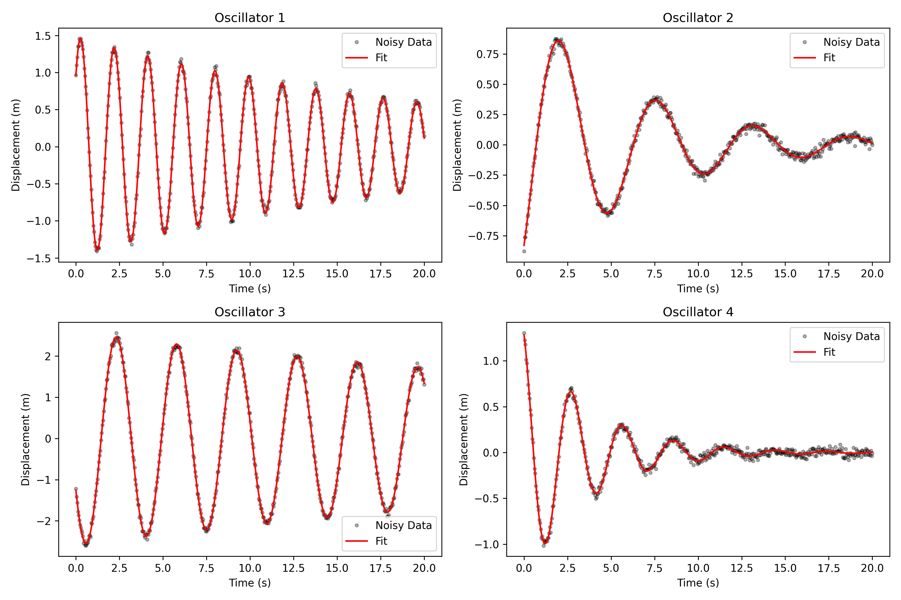
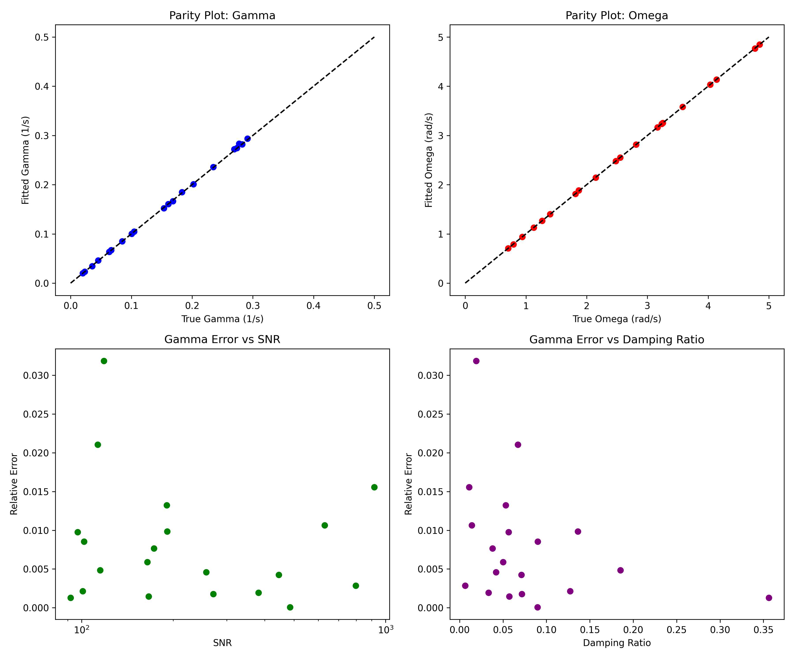

Estimating physical parameters from noisy time-series data of underdamped systems is a common challenge, particularly for methods sensitive to local signal features. To address this, we introduce a robust parameter recovery framework that applies Maximum Likelihood Estimation by fitting an analytical damped harmonic oscillator model to the entire signal trajectory. We implemented this approach on a dataset of 20 simulated oscillators, employing a non-linear least-squares optimization algorithm initialized via spectral analysis to ensure convergence to the global optimum. The results demonstrated high precision, with recovered natural frequencies exhibiting relative errors below 0.5% and damping coefficients typically within 1-3% of the ground truth. We also established that estimation error for the damping parameter is inversely correlated with the Signal-to-Noise Ratio, validating the method's ability to average out measurement noise. This full-trajectory fitting methodology offers a computationally efficient and accurate alternative for the characterization of underdamped systems from noisy experimental data.

